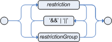
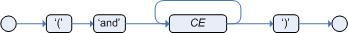
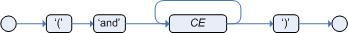

Rule Language Reference (Traditional)
Traditional DRL Syntax
This chapter explains the traditional DRL syntax. This syntax can be used instead of the RuleUnit and OOPath based syntax. The traditional syntax is still fully supported.
Packages in DRL
A package is a folder of related assets in Drools, such as data objects, DRL files, decision tables, and other asset types. A package also serves as a unique namespace for each group of rules. A single rule base can contain multiple packages. You typically store all the rules for a package in the same file as the package declaration so that the package is self-contained. However, you can import objects from other packages that you want to use in the rules.
The following example is a package name and namespace for a DRL file in a mortgage application decision service:
package org.mortgages;The following railroad diagram shows all the components that may make up a package:

Note that a package must have a namespace and be declared using standard Java conventions for package names; i.e., no spaces, unlike rule names which allow spaces.
In terms of the order of elements, they can appear in any order in the rule file, with the exception of the package statement, which must be at the top of the file.
In all cases, the semicolons are optional.
Notice that any rule attribute (as described the section Rule Attributes) may also be written at package level, superseding the attribute’s default value. The modified default may still be replaced by an attribute setting within a rule.
Import statements in DRL

Similar to import statements in Java, imports in DRL files identify the fully qualified paths and type names for any objects that you want to use in the rules. You specify the package and data object in the format packageName.objectName, with multiple imports on separate lines. The Drools rule engine automatically imports classes from the Java package with the same name as the DRL package and from the package java.lang.
The following example is an import statement for a loan application object in a mortgage application decision service:
import org.mortgages.LoanApplication;Functions in DRL

Functions in DRL files put semantic code in your rule source file instead of in Java classes. Functions are especially useful if an action (then) part of a rule is used repeatedly and only the parameters differ for each rule. Above the rules in the DRL file, you can declare the function or import a static method from a helper class as a function, and then use the function by name in an action (then) part of the rule.
The following examples illustrate a function that is either declared or an imported static method in a DRL file:
function String hello(String applicantName) {
return "Hello " + applicantName + "!";
}
rule "Using a function"
when
// Empty
then
System.out.println( hello( "James" ) );
endpackage org.example.applicant;
public class MyFunctions {
public static String hello(String applicantName) {
return "Hello " + applicantName + "!";
}
}import static org.example.applicant.MyFunctions.hello;
rule "Using a function"
when
// Empty
then
System.out.println( hello( "James" ) );
end|
A function declared in a DRL file cannot be imported to a rule in a different package while a Java static method in a different package can be imported. |
|
A function body cannot access globals. From the RHS of a rule, you can always pass a global as a function parameter when invoking the function, for exmaple: |
Queries in DRL

Queries in DRL files search the working memory of the Drools rule engine for facts related to the rules in the DRL file. You add the query definitions in DRL files and then obtain the matching results in your application code. Queries search for a set of defined conditions and do not require when or then specifications. Query names are global to the KIE base and therefore must be unique among all other rule queries in the project. To return the results of a query, you construct a QueryResults definition using ksession.getQueryResults("name"), where "name" is the query name. This returns a list of query results, which enable you to retrieve the objects that matched the query. You define the query and query results parameters above the rules in the DRL file.
The following example is a query definition in a DRL file for underage applicants in a mortgage application decision service, with the accompanying application code:
query "people under the age of 21"
$person : Person( age < 21 )
endQueryResults results = ksession.getQueryResults( "people under the age of 21" );
System.out.println( "we have " + results.size() + " people under the age of 21" );You can also iterate over the returned QueryResults using a standard for loop. Each element is a QueryResultsRow that you can use to access each of the columns in the tuple.
QueryResults results = ksession.getQueryResults( "people under the age of 21" );
System.out.println( "we have " + results.size() + " people under the age of 21" );
System.out.println( "These people are under the age of 21:" );
for ( QueryResultsRow row : results ) {
Person person = ( Person ) row.get( "person" );
System.out.println( person.getName() + "\n" );
}Support for positional syntax has been added for more compact code. By default the declared type order in the type declaration matches the argument position. But it possible to override these using the @position annotation. This allows patterns to be used with positional arguments, instead of the more verbose named arguments.
declare Cheese
name : String @position(1)
shop : String @position(2)
price : int @position(0)
endThe @Position annotation, in the org.drools.definition.type package, can be used to annotate original pojos on the classpath.
Currently only fields on classes can be annotated.
Inheritance of classes is supported, but not interfaces or methods.
The isContainedIn query below demonstrates the use of positional arguments in a pattern; Location(x, y;) instead of Location( thing == x, location == y).
Queries can now call other queries, this combined with optional query arguments provides derivation query style backward chaining. Positional and named syntax is supported for arguments. It is also possible to mix both positional and named, but positional must come first, separated by a semi colon. Literal expressions can be passed as query arguments, but at this stage you cannot mix expressions with variables. Here is an example of a query that calls another query. Note that 'z' here will always be an 'out' variable. The '?' symbol means the query is pull only, once the results are returned you will not receive further results as the underlying data changes.
declare Location
thing : String
location : String
end
query isContainedIn( String x, String y )
Location(x, y;)
or
( Location(z, y;) and ?isContainedIn(x, z;) )
endAs previously mentioned you can use live "open" queries to reactively receive changes over time from the query results, as the underlying data it queries against changes. Notice the "look" rule calls the query without using '?'.
query isContainedIn( String x, String y )
Location(x, y;)
or
( Location(z, y;) and isContainedIn(x, z;) )
end
rule look when
Person( $l : likes )
isContainedIn( $l, 'office'; )
then
insertLogical( $l 'is in the office' );
endDrools supports unification for derivation queries, in short this means that arguments are optional. It is possible to call queries from Java leaving arguments unspecified using the static field org.drools.core.runtime.rule.Variable.v - note you must use 'v' and not an alternative instance of Variable. These are referred to as 'out' arguments. Note that the query itself does not declare at compile time whether an argument is in or an out, this can be defined purely at runtime on each use. The following example will return all objects contained in the office.
results = ksession.getQueryResults( "isContainedIn", new Object[] { Variable.v, "office" } );
l = new ArrayList<List<String>>();
for ( QueryResultsRow r : results ) {
l.add( Arrays.asList( new String[] { (String) r.get( "x" ), (String) r.get( "y" ) } ) );
}The algorithm uses stacks to handle recursion, so the method stack will not blow up.
It is also possible to use as input argument for a query both the field of a fact as in:
query contains(String $s, String $c)
$s := String( this.contains( $c ) )
end
rule PersonNamesWithA when
$p : Person()
contains( $p.name, "a"; )
then
endand more in general any kind of valid expression like in:
query checkLength(String $s, int $l)
$s := String( length == $l )
end
rule CheckPersonNameLength when
$i : Integer()
$p : Person()
checkLength( $p.name, 1 + $i + $p.age; )
then
endThe following is not yet supported:
-
List and Map unification
-
Expression unification - pred( X, X + 1, X * Y / 7 )
Type declarations and metadata in DRL

Declarations in DRL files define new fact types or metadata for fact types to be used by rules in the DRL file:
-
New fact types: The default fact type in the
java.langpackage of Drools isObject, but you can declare other types in DRL files as needed. Declaring fact types in DRL files enables you to define a new fact model directly in the Drools rule engine, without creating models in a lower-level language like Java. You can also declare a new type when a domain model is already built and you want to complement this model with additional entities that are used mainly during the reasoning process. -
Metadata for fact types: You can associate metadata in the format
@key(value)with new or existing facts. Metadata can be any kind of data that is not represented by the fact attributes and is consistent among all instances of that fact type. The metadata can be queried at run time by the Drools rule engine and used in the reasoning process.
Type declarations without metadata in DRL
A declaration of a new fact does not require any metadata, but must include a list of attributes or fields. If a type declaration does not include identifying attributes, the Drools rule engine searches for an existing fact class in the classpath and raises an error if the class is missing.
The following example is a declaration of a new fact type Person with no metadata in a DRL file:
declare Person
name : String
dateOfBirth : java.util.Date
address : Address
end
rule "Using a declared type"
when
$p : Person( name == "James" )
then // Insert Mark, who is a customer of James.
Person mark = new Person();
mark.setName( "Mark" );
insert( mark );
endIn this example, the new fact type Person has the three attributes name, dateOfBirth, and address. Each attribute has a type that can be any valid Java type, including another class that you create or a fact type that you previously declared. The dateOfBirth attribute has the type java.util.Date, from the Java API, and the address attribute has the previously defined fact type Address.
To avoid writing the fully qualified name of a class every time you declare it, you can define the full class name as part of the import clause:
import java.util.Date
declare Person
name : String
dateOfBirth : Date
address : Address
endWhen you declare a new fact type, the Drools rule engine generates at compile time a Java class representing the fact type. The generated Java class is a one-to-one JavaBeans mapping of the type definition.
For example, the following Java class is generated from the example Person type declaration:
public class Person implements Serializable {
private String name;
private java.util.Date dateOfBirth;
private Address address;
// Empty constructor
public Person() {...}
// Constructor with all fields
public Person( String name, Date dateOfBirth, Address address ) {...}
// If keys are defined, constructor with keys
public Person( ...keys... ) {...}
// Getters and setters
// `equals` and `hashCode`
// `toString`
}You can then use the generated class in your rules like any other fact, as illustrated in the previous rule example with the Person type declaration:
rule "Using a declared type"
when
$p : Person( name == "James" )
then // Insert Mark, who is a customer of James.
Person mark = new Person();
mark.setName( "Mark" );
insert( mark );
endEnumerative type declarations in DRL
DRL supports the declaration of enumerative types in the format declare enum <factType>, followed by a comma-separated list of values ending with a semicolon. You can then use the enumerative list in the rules in the DRL file.
For example, the following enumerative type declaration defines days of the week for an employee scheduling rule:
declare enum DaysOfWeek
SUN("Sunday"),MON("Monday"),TUE("Tuesday"),WED("Wednesday"),THU("Thursday"),FRI("Friday"),SAT("Saturday");
fullName : String
end
rule "Using a declared Enum"
when
$emp : Employee( dayOff == DaysOfWeek.MON )
then
...
endExtended type declarations in DRL
DRL supports type declaration inheritance in the format declare <factType1> extends <factType2>. To extend a type declared in Java by a subtype declared in DRL, you repeat the parent type in a declaration statement without any fields.
For example, the following type declarations extend a Student type from a top-level Person type, and a LongTermStudent type from the Student subtype:
import org.people.Person
declare Person end
declare Student extends Person
school : String
end
declare LongTermStudent extends Student
years : int
course : String
endType declarations with metadata in DRL
You can associate metadata in the format @key(value) (the value is optional) with fact types or fact attributes. Metadata can be any kind of data that is not represented by the fact attributes and is consistent among all instances of that fact type. The metadata can be queried at run time by the Drools rule engine and used in the reasoning process. Any metadata that you declare before the attributes of a fact type are assigned to the fact type, while metadata that you declare after an attribute are assigned to that particular attribute.
In the following example, the two metadata attributes @author and @dateOfCreation are declared for the Person fact type, and the two metadata items @key and @maxLength are declared for the name attribute. The @key metadata attribute has no required value, so the parentheses and the value are omitted.
import java.util.Date
declare Person
@author( Bob )
@dateOfCreation( 01-Feb-2009 )
name : String @key @maxLength( 30 )
dateOfBirth : Date
address : Address
endFor declarations of metadata attributes for existing types, you can identify the fully qualified class name as part of the import clause for all declarations or as part of the individual declare clause:
import org.drools.examples.Person
declare Person
@author( Bob )
@dateOfCreation( 01-Feb-2009 )
enddeclare org.drools.examples.Person
@author( Bob )
@dateOfCreation( 01-Feb-2009 )
end- @role
-
This tag determines whether a given fact type is handled as a regular fact or an event in the Drools rule engine during complex event processing.
Default parameter:
factSupported parameters:
fact,event@role( fact | event )Example: Declare VoiceCall as event typedeclare VoiceCall @role( event ) end - @timestamp
-
This tag is automatically assigned to every event in the Drools rule engine. By default, the time is provided by the session clock and assigned to the event when it is inserted into the working memory of the Drools rule engine. You can specify a custom time stamp attribute instead of the default time stamp added by the session clock.
Default parameter: The time added by the Drools rule engine session clock
Supported parameters: Session clock time or custom time stamp attribute
@timestamp( <attributeName> )Example: Declare VoiceCall timestamp attributedeclare VoiceCall @role( event ) @timestamp( callDateTime ) end - @duration
-
This tag determines the duration time for events in the Drools rule engine. Events can be interval-based events or point-in-time events. Interval-based events have a duration time and persist in the working memory of the Drools rule engine until their duration time has lapsed. Point-in-time events have no duration and are essentially interval-based events with a duration of zero. By default, every event in the Drools rule engine has a duration of zero. You can specify a custom duration attribute instead of the default.
Default parameter: Null (zero)
Supported parameters: Custom duration attribute
@duration( <attributeName> )Example: Declare VoiceCall duration attributedeclare VoiceCall @role( event ) @timestamp( callDateTime ) @duration( callDuration ) end - @expires
-
This tag determines the time duration before an event expires in the working memory of the Drools rule engine. By default, an event expires when the event can no longer match and activate any of the current rules. You can define an amount of time after which an event should expire. This tag definition also overrides the implicit expiration offset calculated from temporal constraints and sliding windows in the KIE base. This tag is available only when the Drools rule engine is running in stream mode.
Default parameter: Null (event expires after event can no longer match and activate rules)
Supported parameters: Custom
timeOffsetattribute in the format[#d][#h][#m][#s][[ms]]@expires( <timeOffset> )Example: Declare expiration offset for VoiceCall eventsdeclare VoiceCall @role( event ) @timestamp( callDateTime ) @duration( callDuration ) @expires( 1h35m ) end
Access to DRL declared types in application code
Declared types in DRL are typically used within the DRL files while Java models are typically used when the model is shared between rules and applications. Because declared types are generated at KIE base compile time, an application cannot access them until application run time. In some cases, an application needs to access and handle facts directly from the declared types, especially when the application wraps the Drools rule engine and provides higher-level, domain-specific user interfaces for rules management.
To handle declared types directly from the application code, you can use the org.drools.definition.type.FactType API in Drools. Through this API, you can instantiate, read, and write fields in the declared fact types.
The following example code modifies a Person fact type directly from an application:
import java.util.Date;
import org.kie.api.definition.type.FactType;
import org.kie.api.KieBase;
import org.kie.api.runtime.KieSession;
...
// Get a reference to a KIE base with the declared type:
KieBase kbase = ...
// Get the declared fact type:
FactType personType = kbase.getFactType("org.drools.examples", "Person");
// Create instances:
Object bob = personType.newInstance();
// Set attribute values:
personType.set(bob, "name", "Bob" );
personType.set(bob, "dateOfBirth", new Date());
personType.set(bob, "address", new Address("King's Road","London","404"));
// Insert the fact into a KIE session:
KieSession ksession = ...
ksession.insert(bob);
ksession.fireAllRules();
// Read attributes:
String name = (String) personType.get(bob, "name");
Date date = (Date) personType.get(bob, "dateOfBirth");The API also includes other helpful methods, such as setting all the attributes at once, reading values from a Map collection, or reading all attributes at once into a Map collection.
Although the API behavior is similar to Java reflection, the API does not use reflection and relies on more performant accessors that are implemented with generated bytecode.
Global variables in DRL

Global variables in DRL files typically provide data or services for the rules, such as application services used in rule consequences, and return data from rules, such as logs or values added in rule consequences. You set the global value in the working memory of the Drools rule engine through a KIE session configuration or REST operation, declare the global variable above the rules in the DRL file, and then use it in an action (then) part of the rule. For multiple global variables, use separate lines in the DRL file.
The following example illustrates a global variable list configuration for the Drools rule engine and the corresponding global variable definition in the DRL file:
List<String> list = new ArrayList<>();
KieSession kieSession = kiebase.newKieSession();
kieSession.setGlobal( "myGlobalList", list );global java.util.List myGlobalList;
rule "Using a global"
when
// Empty
then
myGlobalList.add( "My global list" );
end|
Do not use global variables to establish conditions in rules unless a global variable has a constant immutable value. Global variables are not inserted into the working memory of the Drools rule engine, so the Drools rule engine cannot track value changes of variables. Do not use global variables to share data between rules. Rules always reason and react to the working memory state, so if you want to pass data from rule to rule, assert the data as facts into the working memory of the Drools rule engine. |
A use case for a global variable might be an instance of an email service. In your integration code that is calling the Drools rule engine, you obtain your emailService object and then set it in the working memory of the Drools rule engine. In the DRL file, you declare that you have a global of type emailService and give it the name "email", and then in your rule consequences, you can use actions such as email.sendSMS(number, message).
If you declare global variables with the same identifier in multiple packages, then you must set all the packages with the same type so that they all reference the same global value.
Timer and calendar rule attributes in DRL
Timers and calendars are DRL rule attributes that enable you to apply scheduling and timing constraints to your DRL rules. These attributes require additional configurations depending on the use case.
The timer attribute in DRL rules is a string identifying either int (interval) or cron timer definitions for scheduling a rule and supports the following formats:
timer ( int: <initial delay> <repeat interval> )
timer ( cron: <cron expression> )// Run after a 30-second delay
timer ( int: 30s )
// Run every 5 minutes after a 30-second delay each time
timer ( int: 30s 5m )// Run every 15 minutes
timer ( cron:* 0/15 * * * ? )Interval timers follow the semantics of java.util.Timer objects, with an initial delay and an optional repeat interval. Cron timers follow standard Unix cron expressions.
The following example DRL rule uses a cron timer to send an SMS text message every 15 minutes:
rule "Send SMS message every 15 minutes"
timer ( cron:* 0/15 * * * ? )
when
$a : Alarm( on == true )
then
channels[ "sms" ].insert( new Sms( $a.mobileNumber, "The alarm is still on." );
endGenerally, a rule that is controlled by a timer becomes active when the rule is triggered and the rule consequence is executed repeatedly, according to the timer settings. The execution stops when the rule condition no longer matches incoming facts. However, the way the Drools rule engine handles rules with timers depends on whether the Drools rule engine is in active mode or in passive mode.
By default, the Drools rule engine runs in passive mode and evaluates rules, according to the defined timer settings, when a user or an application explicitly calls fireAllRules(). Conversely, if a user or application calls fireUntilHalt(), the Drools rule engine starts in active mode and evaluates rules continually until the user or application explicitly calls halt().
When the Drools rule engine is in active mode, rule consequences are executed even after control returns from a call to fireUntilHalt() and the Drools rule engine remains reactive to any changes made to the working memory. For example, removing a fact that was involved in triggering the timer rule execution causes the repeated execution to terminate, and inserting a fact so that some rule matches causes that rule to be executed. However, the Drools rule engine is not continually active, but is active only after a rule is executed. Therefore, the Drools rule engine does not react to asynchronous fact insertions until the next execution of a timer-controlled rule. Disposing a KIE session terminates all timer activity.
When the Drools rule engine is in passive mode, rule consequences of timed rules are evaluated only when fireAllRules() is invoked again. However, you can change the default timer-execution behavior in passive mode by configuring the KIE session with a TimedRuleExecutionOption option, as shown in the following example:
KieSessionConfiguration ksconf = KieServices.Factory.get().newKieSessionConfiguration();
ksconf.setOption( TimedRuleExecutionOption.YES );
KSession ksession = kbase.newKieSession(ksconf, null);You can additionally set a FILTERED specification on the TimedRuleExecutionOption option that enables you to define a
callback to filter those rules, as shown in the following example:
KieSessionConfiguration ksconf = KieServices.Factory.get().newKieSessionConfiguration();
conf.setOption( new TimedRuleExecutionOption.FILTERED(new TimedRuleExecutionFilter() {
public boolean accept(Rule[] rules) {
return rules[0].getName().equals("MyRule");
}
}) );For interval timers, you can also use an expression timer with expr instead of int to define both the delay and interval as an expression instead of a fixed value.
The following example DRL file declares a fact type with a delay and period that are then used in the subsequent rule with an expression timer:
declare Bean
delay : String = "30s"
period : long = 60000
end
rule "Expression timer"
timer ( expr: $d, $p )
when
Bean( $d : delay, $p : period )
then
// Actions
endThe expressions, such as $d and $p in this example, can use any variable defined in the pattern-matching part of the rule. The variable can be any String value that can be parsed into a time duration or any numeric value that is internally converted in a long value for a duration in milliseconds.
Both interval and expression timers can use the following optional parameters:
-
startandend: ADateor aStringrepresenting aDateor alongvalue. The value can also be aNumberthat is transformed into a JavaDatein the formatnew Date( ((Number) n).longValue() ). -
repeat-limit: An integer that defines the maximum number of repetitions allowed by the timer. If both theendand therepeat-limitparameters are set, the timer stops when the first of the two is reached.
start, end, and repeat-limit parameterstimer (int: 30s 1h; start=3-JAN-2020, end=4-JAN-2020, repeat-limit=50)In this example, the rule is scheduled for every hour, after a delay of 30 seconds each hour, beginning on 3 January 2020 and ending either on 4 January 2020 or when the cycle repeats 50 times.
If the system is paused (for example, the session is serialized and then later deserialized), the rule is scheduled only one time to recover from missing activations regardless of how many activations were missed during the pause, and then the rule is subsequently scheduled again to continue in sync with the timer setting.
The calendar attribute in DRL rules is a Quartz style cron expression for scheduling a rule and supports the following format:
calendars "<definition or registered name>"// Exclude non-business hours
calendars "* * 0-7,18-23 ? * *"
// Weekdays only, as registered in the KIE session
calendars "weekday"You can define a custom calendar and then register it in the KIE session, as shown in the following example:
private static final org.kie.api.time.Calendar WEEKDAY = timestamp -> {
final Calendar c = Calendar.getInstance();
c.setTimeInMillis(timestamp);
final int day = c.get(Calendar.DAY_OF_WEEK);
return day != Calendar.SATURDAY && day != Calendar.SUNDAY;
};ksession.getCalendars().set( "weekday", WEEKDAY );You can use calendars with standard rules and with rules that use timers. The calendar attribute can contain one or more comma-separated calendar names written as String literals.
The following example rules use both calendars and timers to schedule the rules:
rule "Weekdays are high priority"
calendars "weekday"
timer ( int:0 1h )
when
Alarm()
then
send( "priority high - we have an alarm" );
end
rule "Weekends are low priority"
calendars "weekend"
timer ( int:0 4h )
when
Alarm()
then
send( "priority low - we have an alarm" );
endRule conditions in DRL (WHEN)


The when part of a DRL rule (also known as the Left Hand Side (LHS) of the rule) contains the conditions that must be met to execute an action. Conditions consist of a series of stated patterns and constraints, with optional bindings and supported rule condition elements (keywords), based on the available data objects in the package. For example, if a bank requires loan applicants to have over 21 years of age, then the when condition of an "Underage" rule would be Applicant( age < 21 ).
DRL uses when instead of if because if is typically part of a procedural execution flow during which a condition is checked at a specific point in time. In contrast, when indicates that the condition evaluation is not limited to a specific evaluation sequence or point in time, but instead occurs continually at any time. Whenever the condition is met, the actions are executed.
|
If the when section is empty, then the conditions are considered to be true and the actions in the then section are executed the first time a fireAllRules() call is made in the Drools rule engine. This is useful if you want to use rules to set up the Drools rule engine state.
The following example rule uses empty conditions to insert a fact every time the rule is executed:
rule "Always insert applicant"
when
// Empty
then // Actions to be executed once
insert( new Applicant() );
end
// The rule is internally rewritten in the following way:
rule "Always insert applicant"
when
eval( true )
then
insert( new Applicant() );
endIf rule conditions use multiple patterns with no defined keyword conjunctions (such as and, or, or not), the default conjunction is and:
rule "Underage"
when
application : LoanApplication()
Applicant( age < 21 )
then
// Actions
end
// The rule is internally rewritten in the following way:
rule "Underage"
when
application : LoanApplication()
and Applicant( age < 21 )
then
// Actions
endPatterns and constraints
A pattern in a DRL rule condition is the segment to be matched by the Drools rule engine. A pattern can potentially match each fact that is inserted into the working memory of the Drools rule engine. A pattern can also contain constraints to further define the facts to be matched.
The railroad diagram below shows the syntax for this:

In the simplest form, with no constraints, a pattern matches a fact of the given type. In the following example, the type is Person, so the pattern will match against all Person objects in the working memory of the Drools rule engine:
Person()The type does not need to be the actual class of some fact object. Patterns can refer to superclasses or even interfaces, potentially matching facts from many different classes. For example, the following pattern matches all objects in the working memory of the Drools rule engine:
Object() // Matches all objects in the working memoryThe parentheses of a pattern enclose the constraints, such as the following constraint on the person’s age:
Person( age == 50 )A constraint is an expression that returns true or false. Pattern constraints in DRL are essentially Java expressions with some enhancements, such as property access, and some differences, such as equals() and !equals() semantics for == and != (instead of the usual same and not same semantics).
Any JavaBeans property can be accessed directly from pattern constraints. A bean property is exposed internally using a standard JavaBeans getter that takes no arguments and returns something. For example, the age property is written as age in DRL instead of the getter getAge():
Person( age == 50 )
// This is the same as the following getter format:
Person( getAge() == 50 )Drools uses the standard JDK Introspector class to achieve this mapping, so it follows the standard JavaBeans specification. For optimal Drools rule engine performance, use the property access format, such as age, instead of using getters explicitly, such as getAge().
|
Do not use property accessors to change the state of the object in a way that might affect the rules because the Drools rule engine caches the results of the match between invocations for higher efficiency. For example, do not use property accessors in the following ways: Instead of following the second example, insert a fact that wraps the current date in the working memory and update that fact between |
However, if the getter of a property cannot be found, the compiler uses the property name as a fallback method name, without arguments:
Person( age == 50 )
// If `Person.getAge()` does not exist, the compiler uses the following syntax:
Person( age() == 50 )You can also nest access properties in patterns, as shown in the following example. Nested properties are indexed by the Drools rule engine.
Person( address.houseNumber == 50 )
// This is the same as the following format:
Person( getAddress().getHouseNumber() == 50 )
In stateful KIE sessions, use nested accessors carefully because the working memory of the Drools rule engine is not aware of any of the nested values and does not detect when they change. Either consider the nested values immutable while any of their parent references are inserted into the working memory, or, if you want to modify a nested value, mark all of the outer facts as updated. In the previous example, when the houseNumber property changes, any Person with that Address must be marked as updated.
|
You can use any Java expression that returns a boolean value as a constraint inside the parentheses of a pattern. Java expressions can be mixed with other expression enhancements, such as property access:
Person( age == 50 )You can change the evaluation priority by using parentheses, as in any logical or mathematical expression:
Person( age > 100 && ( age % 10 == 0 ) )You can also reuse Java methods in constraints, as shown in the following example:
Person( Math.round( weight / ( height * height ) ) < 25.0 )|
Do not use constraints to change the state of the object in a way that might affect the rules because the Drools rule engine caches the results of the match between invocations for higher efficiency. Any method that is executed on a fact in the rule conditions must be a read-only method. Also, the state of a fact should not change between rule invocations unless those facts are marked as updated in the working memory on every change. For example, do not use a pattern constraint in the following ways: |
Standard Java operator precedence applies to constraint operators in DRL, and DRL operators follow standard Java semantics except for the == and != operators.
The == operator uses null-safe equals() semantics instead of the usual same semantics. For example, the pattern Person( firstName == "John" ) is similar to java.util.Objects.equals(person.getFirstName(), "John"), and because "John" is not null, the pattern is also similar to "John".equals(person.getFirstName()).
The != operator uses null-safe !equals() semantics instead of the usual not same semantics. For example, the pattern Person( firstName != "John" ) is similar to !java.util.Objects.equals(person.getFirstName(), "John").
If the field and the value of a constraint are of different types, the Drools rule engine uses type coercion to resolve the conflict and reduce compilation errors. For instance, if "ten" is provided as a string in a numeric evaluator, a compilation error occurs, whereas "10" is coerced to a numeric 10. In coercion, the field type always takes precedence over the value type:
Person( age == "10" ) // "10" is coerced to 10For groups of constraints, you can use a delimiting comma , to use implicit and connective semantics:
// Person is more than 50 years old and weighs more than 80 kilograms:
Person( age > 50, weight > 80 )
// Person is more than 50 years old, weighs more than 80 kilograms, and is taller than 2 meters:
Person( age > 50, weight > 80, height > 2 )
Although the && and , operators have the same semantics, they are resolved with different priorities. The && operator precedes the || operator, and both the && and || operators together precede the , operator. Use the comma operator at the top-level constraint for optimal Drools rule engine performance and human readability.
|
You cannot embed a comma operator in a composite constraint expression, such as in parentheses:
// Do not use the following format:
Person( ( age > 50, weight > 80 ) || height > 2 )
// Use the following format instead:
Person( ( age > 50 && weight > 80 ) || height > 2 )Bound variables in patterns and constraints
You can bind variables to patterns and constraints to refer to matched objects in other portions of a rule. Bound variables can help you define rules more efficiently or more consistently with how you annotate facts in your data model. To differentiate more easily between variables and fields in a rule, use the standard format $variable for variables, especially in complex rules. This convention is helpful but not required in DRL.
For example, the following DRL rule uses the variable $p for a pattern with the Person fact:
rule "simple rule"
when
$p : Person()
then
System.out.println( "Person " + $p );
endSimilarly, you can also bind variables to properties in pattern constraints, as shown in the following example:
// Two persons of the same age:
Person( $firstAge : age ) // Binding
Person( age == $firstAge ) // Constraint expression|
Constraint binding considers only the first atomic expression that follows it. In the following example the pattern only binds the age of the person to the variable For clearer and more efficient rule definitions, separate constraint bindings and constraint expressions. Although mixed bindings and expressions are supported, which can complicate patterns and affect evaluation efficiency. In the preceding example, if you want to bind to the variable |
The Drools rule engine does not support bindings to the same declaration, but does support unification of arguments across several properties. While positional arguments are always processed with unification, the unification symbol := exists for named arguments.
The following example patterns unify the age property across two Person facts:
Person( $age := age )
Person( $age := age )Unification declares a binding for the first occurrence and constrains to the same value of the bound field for sequence occurrences.
Nested constraints and inline casts
In some cases, you might need to access multiple properties of a nested object, as shown in the following example:
Person( name == "mark", address.city == "london", address.country == "uk" )You can group these property accessors to nested objects with the syntax .( <constraints> ) for more readable rules, as shown in the following example:
Person( name == "mark", address.( city == "london", country == "uk") )
The period prefix . differentiates the nested object constraints from a method call.
|
When you work with nested objects in patterns, you can use the syntax <type>#<subtype> to cast to a subtype and make the getters from the parent type available to the subtype. You can use either the object name or fully qualified class name, and you can cast to one or multiple subtypes, as shown in the following examples:
// Inline casting with subtype name:
Person( name == "mark", address#LongAddress.country == "uk" )
// Inline casting with fully qualified class name:
Person( name == "mark", address#org.domain.LongAddress.country == "uk" )
// Multiple inline casts:
Person( name == "mark", address#LongAddress.country#DetailedCountry.population > 10000000 )These example patterns cast Address to LongAddress, and additionally to DetailedCountry in the last example, making the parent getters available to the subtypes in each case.
You can use the instanceof operator to infer the results of the specified type in subsequent uses of that field with the pattern, as shown in the following example:
Person( name == "mark", address instanceof LongAddress, address.country == "uk" )If an inline cast is not possible (for example, if instanceof returns false), the evaluation is considered false.
Date literal in constraints
By default, the Drools rule engine supports the date format dd-mmm-yyyy. You can customize the date format, including a time format mask if needed, by providing an alternative format mask with the system property drools.dateformat="dd-mmm-yyyy hh:mm". You can also customize the date format by changing the language locale with the drools.defaultlanguage and drools.defaultcountry system properties (for example, the locale of Thailand is set as drools.defaultlanguage=th and drools.defaultcountry=TH).
Person( bornBefore < "27-Oct-2009" )Auto-boxing and primitive types
Drools attempts to preserve numbers in their primitive or object wrapper form, so a variable bound to an int primitive when used in a code block or expression will no longer need manual unboxing; unlike early Drools versions where all primitives were autoboxed, requiring manual unboxing. A variable bound to an object wrapper will remain as an object; the existing JDK 1.5 and JDK 5 rules to handle auto-boxing and unboxing apply in this case. When evaluating field constraints, the system attempts to coerce one of the values into a comparable format; so a primitive is comparable to an object wrapper.
Supported operators in DRL pattern constraints
DRL supports standard Java semantics for operators in pattern constraints, with some exceptions and with some additional operators that are unique in DRL. The following list summarizes the operators that are handled differently in DRL constraints than in standard Java semantics or that are unique in DRL constraints.
.(),#-
Use the
.()operator to group property accessors to nested objects, and use the#operator to cast to a subtype in nested objects. Casting to a subtype makes the getters from the parent type available to the subtype. You can use either the object name or fully qualified class name, and you can cast to one or multiple subtypes.Example patterns with nested objects// Ungrouped property accessors: Person( name == "mark", address.city == "london", address.country == "uk" ) // Grouped property accessors: Person( name == "mark", address.( city == "london", country == "uk") )The period prefix .differentiates the nested object constraints from a method call.Example patterns with inline casting to a subtype// Inline casting with subtype name: Person( name == "mark", address#LongAddress.country == "uk" ) // Inline casting with fully qualified class name: Person( name == "mark", address#org.domain.LongAddress.country == "uk" ) // Multiple inline casts: Person( name == "mark", address#LongAddress.country#DetailedCountry.population > 10000000 ) !.-
Use this operator to dereference a property in a null-safe way. The value to the left of the
!.operator must be not null (interpreted as!= null) in order to give a positive result for pattern matching.Example constraint with null-safe dereferencingPerson( $streetName : address!.street ) // This is internally rewritten in the following way: Person( address != null, $streetName : address.street ) []-
Use this operator to access a
Listvalue by index or aMapvalue by key.Example constraints withListandMapaccess// The following format is the same as `childList(0).getAge() == 18`: Person(childList[0].age == 18) // The following format is the same as `credentialMap.get("jdoe").isValid()`: Person(credentialMap["jdoe"].valid) <,<=,>,>=-
Use these operators on properties with natural ordering. For example, for
Datefields, the<operator means before, and forStringfields, the operator means alphabetically before. These properties apply only to comparable properties.Example constraints withbeforeoperatorPerson( birthDate < $otherBirthDate ) Person( firstName < $otherFirstName ) ==,!=-
Use these operators as
equals()and!equals()methods in constraints, instead of the usualsameandnot samesemantics.Example constraint with null-safe equalityPerson( firstName == "John" ) // This is similar to the following formats: java.util.Objects.equals(person.getFirstName(), "John") "John".equals(person.getFirstName())Example constraint with null-safe not equalityPerson( firstName != "John" ) // This is similar to the following format: !java.util.Objects.equals(person.getFirstName(), "John") &&,||-
Use these operators to create an abbreviated combined relation condition that adds more than one restriction on a field. You can group constraints with parentheses
()to create a recursive syntax pattern.Example constraints with abbreviated combined relation// Simple abbreviated combined relation condition using a single `&&`: Person(age > 30 && < 40) // Complex abbreviated combined relation using groupings: Person(age ((> 30 && < 40) || (> 20 && < 25))) // Mixing abbreviated combined relation with constraint connectives: Person(age > 30 && < 40 || location == "london")Figure 11. Abbreviated combined relation condition Figure 12. Abbreviated combined relation condition withparentheses
Figure 12. Abbreviated combined relation condition withparentheses matches,not matches-
Use these operators to indicate that a field matches or does not match a specified Java regular expression. Typically, the regular expression is a
Stringliteral, but variables that resolve to a valid regular expression are also supported. These operators apply only toStringproperties. If you usematchesagainst anullvalue, the resulting evaluation is alwaysfalse. If you usenot matchesagainst anullvalue, the resulting evaluation is alwaystrue. As in Java, regular expressions that you write asStringliterals must use a double backslash\\to escape.Example constraint to match or not match a regular expressionPerson( country matches "(USA)?\\S*UK" ) Person( country not matches "(USA)?\\S*UK" ) contains,not contains-
Use these operators to verify whether a field that is an
Arrayor aCollectioncontains or does not contain a specified value. These operators apply toArrayorCollectionproperties, but you can also use these operators in place ofString.contains()and!String.contains()constraints checks.Example constraints withcontainsandnot containsfor a Collection// Collection with a specified field: FamilyTree( countries contains "UK" ) FamilyTree( countries not contains "UK" ) // Collection with a variable: FamilyTree( countries contains $var ) FamilyTree( countries not contains $var )Example constraints withcontainsandnot containsfor a String literal// Sting literal with a specified field: Person( fullName contains "Jr" ) Person( fullName not contains "Jr" ) // String literal with a variable: Person( fullName contains $var ) Person( fullName not contains $var )For backward compatibility, the excludesoperator is a supported synonym fornot contains. memberOf,not memberOf-
Use these operators to verify whether a field is a member of or is not a member of an
Arrayor aCollectionthat is defined as a variable. TheArrayorCollectionmust be a variable.Example constraints withmemberOfandnot memberOfwith a CollectionFamilyTree( person memberOf $europeanDescendants ) FamilyTree( person not memberOf $europeanDescendants ) soundslike-
Use this operator to verify whether a word has almost the same sound, using English pronunciation, as the given value (similar to the
matchesoperator). This operator uses the Soundex algorithm.Example constraint withsoundslike// Match firstName "Jon" or "John": Person( firstName soundslike "John" ) str-
Use this operator to verify whether a field that is a
Stringstarts with or ends with a specified value. You can also use this operator to verify the length of theString.Example constraints withstr// Verify what the String starts with: Message( routingValue str[startsWith] "R1" ) // Verify what the String ends with: Message( routingValue str[endsWith] "R2" ) // Verify the length of the String: Message( routingValue str[length] 17 ) in,notin-
Use these operators to specify more than one possible value to match in a constraint (compound value restriction). This functionality of compound value restriction is supported only in the
inandnot inoperators. The second operand of these operators must be a comma-separated list of values enclosed in parentheses. You can provide values as variables, literals, return values, or qualified identifiers. These operators are internally rewritten as a list of multiple restrictions using the operators==or!=. Figure 13. compoundValueRestrictionExample constraints with
Figure 13. compoundValueRestrictionExample constraints withinandnotinPerson( $color : favoriteColor ) Color( type in ( "red", "blue", $color ) ) Person( $color : favoriteColor ) Color( type notin ( "red", "blue", $color ) )
Operator precedence in DRL pattern constraints
DRL supports standard Java operator precedence for applicable constraint operators, with some exceptions and with some additional operators that are unique in DRL. The following table lists DRL operator precedence where applicable, from highest to lowest precedence:
| Operator type | Operators | Notes |
|---|---|---|
Nested or null-safe property access |
|
Not standard Java semantics |
|
|
Not standard Java semantics |
Constraint binding |
|
Not standard Java semantics |
Multiplicative |
|
|
Additive |
|
|
Shift |
|
|
Relational |
|
|
Equality |
|
Uses |
Non-short-circuiting |
|
|
Non-short-circuiting exclusive |
|
|
Non-short-circuiting inclusive |
|
|
Logical |
|
|
Logical |
|
|
Ternary |
|
|
Comma-separated |
|
Not standard Java semantics |
Supported rule condition elements in DRL (keywords)
DRL supports the following rule condition elements (keywords) that you can use with the patterns that you define in DRL rule conditions:
and-
Use this to group conditional components into a logical conjunction. Infix and prefix
andare supported. You can group patterns explicitly with parentheses(). By default, all listed patterns are combined withandwhen no conjunction is specified. Figure 14. infixAndFigure 15. prefixAndExample patterns with
Figure 14. infixAndFigure 15. prefixAndExample patterns withand//Infix `and`: Color( colorType : type ) and Person( favoriteColor == colorType ) //Infix `and` with grouping: (Color( colorType : type ) and (Person( favoriteColor == colorType ) or Person( favoriteColor == colorType )) // Prefix `and`: (and Color( colorType : type ) Person( favoriteColor == colorType )) // Default implicit `and`: Color( colorType : type ) Person( favoriteColor == colorType )Do not use a leading declaration binding with the
andkeyword (as you can withor, for example). A declaration can only reference a single fact at a time, and if you use a declaration binding withand, then whenandis satisfied, it matches both facts and results in an error.Example misuse ofand// Causes compile error: $person : (Person( name == "Romeo" ) and Person( name == "Juliet")) or-
Use this to group conditional components into a logical disjunction. Infix and prefix
orare supported. You can group patterns explicitly with parentheses(). You can also use pattern binding withor, but each pattern must be bound separately. Figure 16. infixOr
Figure 16. infixOr Figure 17. prefixOrExample patterns with
Figure 17. prefixOrExample patterns withor//Infix `or`: Color( colorType : type ) or Person( favoriteColor == colorType ) //Infix `or` with grouping: (Color( colorType : type ) or (Person( favoriteColor == colorType ) and Person( favoriteColor == colorType )) // Prefix `or`: (or Color( colorType : type ) Person( favoriteColor == colorType ))Example patterns withorand pattern bindingpensioner : (Person( sex == "f", age > 60 ) or Person( sex == "m", age > 65 )) (or pensioner : Person( sex == "f", age > 60 ) pensioner : Person( sex == "m", age > 65 ))The Drools rule engine does not directly interpret the
orelement but uses logical transformations to rewrite a rule withoras a number of sub-rules. This process ultimately results in a rule that has a singleoras the root node and one sub-rule for each of its condition elements. Each sub-rule is activated and executed like any normal rule, with no special behavior or interaction between the sub-rules.Therefore, consider the
orcondition element a shortcut for generating two or more similar rules that, in turn, can create multiple activations when two or more terms of the disjunction are true. exists-
Use this to specify facts and constraints that must exist. This option is triggered on only the first match, not subsequent matches. If you use this element with multiple patterns, enclose the patterns with parentheses
(). Figure 18. ExistsExample patterns with
Figure 18. ExistsExample patterns withexistsexists Person( firstName == "John") exists (Person( firstName == "John", age == 42 )) exists (Person( firstName == "John" ) and Person( lastName == "Doe" )) not-
Use this to specify facts and constraints that must not exist. If you use this element with multiple patterns, enclose the patterns with parentheses
(). Figure 19. NotExample patterns with
Figure 19. NotExample patterns withnotnot Person( firstName == "John") not (Person( firstName == "John", age == 42 )) not (Person( firstName == "John" ) and Person( lastName == "Doe" )) forall-
Use this to verify whether all facts that match the first pattern match all the remaining patterns. When a
forallconstruct is satisfied, the rule evaluates totrue. This element is a scope delimiter, so it can use any previously bound variable, but no variable bound inside of it is available for use outside of it. Figure 20. ForallExample rule with
Figure 20. ForallExample rule withforallrule "All full-time employees have red ID badges" when forall( $emp : Employee( type == "fulltime" ) Employee( this == $emp, badgeColor == "red" ) ) then // True, all full-time employees have red ID badges. endIn this example, the rule selects all
Employeeobjects whose type is"fulltime". For each fact that matches this pattern, the rule evaluates the patterns that follow (badge color) and if they match, the rule evaluates totrue.To state that all facts of a given type in the working memory of the Drools rule engine must match a set of constraints, you can use
forallwith a single pattern for simplicity.Example rule withforalland a single patternrule "All employees have red ID badges" when forall( Employee( badgeColor == "red" ) ) then // True, all employees have red ID badges. endYou can use
forallconstructs with multiple patterns or nest them with other condition elements, such as inside anotelement construct.Example rule withforalland multiple patternsrule "All employees have health and dental care programs" when forall( $emp : Employee() HealthCare( employee == $emp ) DentalCare( employee == $emp ) ) then // True, all employees have health and dental care. endExample rule withforallandnotrule "Not all employees have health and dental care" when not ( forall( $emp : Employee() HealthCare( employee == $emp ) DentalCare( employee == $emp ) ) ) then // True, not all employees have health and dental care. endThe format forall( p1 p2 p3 …)is equivalent tonot( p1 and not( and p2 p3 … ) ). from-
Use this to specify a data source for a pattern. This enables the Drools rule engine to reason over data that is not in the working memory. The data source can be a sub-field on a bound variable or the result of a method call. The expression used to define the object source is any expression that follows regular MVEL syntax. Therefore, the
fromelement enables you to easily use object property navigation, execute method calls, and access maps and collection elements. Figure 21. fromExample rule with
Figure 21. fromExample rule withfromand pattern bindingrule "Validate zipcode" when Person( $personAddress : address ) Address( zipcode == "23920W" ) from $personAddress then // Zip code is okay. endExample rule withfromand a graph notationrule "Validate zipcode" when $p : Person() $a : Address( zipcode == "23920W" ) from $p.address then // Zip code is okay. endExample rule withfromto iterate over all objectsrule "Apply 10% discount to all items over US$ 100 in an order" when $order : Order() $item : OrderItem( value > 100 ) from $order.items then // Apply discount to `$item`. endFor large collections of objects, instead of adding an object with a large graph that the Drools rule engine must iterate over frequently, add the collection directly to the KIE session and then join the collection in the condition, as shown in the following example:
when $order : Order() OrderItem( value > 100, order == $order )Example rule withfromandlock-on-activerule attributerule "Assign people in North Carolina (NC) to sales region 1" ruleflow-group "test" lock-on-active true when $p : Person() $a : Address( state == "NC" ) from $p.address then modify ($p) {} // Assign the person to sales region 1. end rule "Apply a discount to people in the city of Raleigh" ruleflow-group "test" lock-on-active true when $p : Person() $a : Address( city == "Raleigh" ) from $p.address then modify ($p) {} // Apply discount to the person. endUsing
fromwithlock-on-activerule attribute can result in rules not being executed. You can address this issue in one of the following ways:-
Avoid using the
fromelement when you can insert all facts into the working memory of the Drools rule engine or use nested object references in your constraint expressions. -
Place the variable used in the
modify()block as the last sentence in your rule condition. -
Avoid using the
lock-on-activerule attribute when you can explicitly manage how rules within the same ruleflow group place activations on one another.
The pattern that contains a
fromclause cannot be followed by another pattern starting with a parenthesis. The reason for this restriction is that the DRL parser reads thefromexpression as"from $l (String() or Number())"and it cannot differentiate this expression from a function call. The simplest workaround to this is to wrap thefromclause in parentheses, as shown in the following example:Example rules withfromused incorrectly and correctly// Do not use `from` in this way: rule R when $l : List() String() from $l (String() or Number()) then // Actions end // Use `from` in this way instead: rule R when $l : List() (String() from $l) (String() or Number()) then // Actions end -
entry-point-
Use this to define an entry point, or event stream, corresponding to a data source for the pattern. This element is typically used with the
fromcondition element. You can declare an entry point for events so that the Drools rule engine uses data from only that entry point to evaluate the rules. You can declare an entry point either implicitly by referencing it in DRL rules or explicitly in your Java application.Example rule withfrom entry-pointrule "Authorize withdrawal" when WithdrawRequest( $ai : accountId, $am : amount ) from entry-point "ATM Stream" CheckingAccount( accountId == $ai, balance > $am ) then // Authorize withdrawal. endExample Java application code with EntryPoint object and inserted factsimport org.kie.api.runtime.KieSession; import org.kie.api.runtime.rule.EntryPoint; // Create your KIE base and KIE session as usual: KieSession session = ... // Create a reference to the entry point: EntryPoint atmStream = session.getEntryPoint("ATM Stream"); // Start inserting your facts into the entry point: atmStream.insert(aWithdrawRequest); collect-
Use this to define a collection of objects that the rule can use as part of the condition. The rule obtains the collection either from a specified source or from the working memory of the Drools rule engine. The result pattern of the
collectelement can be any concrete class that implements thejava.util.Collectioninterface and provides a default no-arg public constructor. You can use Java collections likeList,LinkedList, andHashSet, or your own class. If variables are bound before thecollectelement in a condition, you can use the variables to constrain both your source and result patterns. However, any binding made inside thecollectelement is not available for use outside of it. Figure 22. CollectExample rule with
Figure 22. CollectExample rule withcollectimport java.util.List rule "Raise priority when system has more than three pending alarms" when $system : System() $alarms : List( size >= 3 ) from collect( Alarm( system == $system, status == 'pending' ) ) then // Raise priority because `$system` has three or more `$alarms` pending. endIn this example, the rule assesses all pending alarms in the working memory of the Drools rule engine for each given system and groups them in a
List. If three or more alarms are found for a given system, the rule is executed.You can also use the
collectelement with nestedfromelements, as shown in the following example:Example rule withcollectand nestedfromimport java.util.LinkedList; rule "Send a message to all parents" when $town : Town( name == 'Paris' ) $mothers : LinkedList() from collect( Person( children > 0 ) from $town.getPeople() ) then // Send a message to all parents. end accumulate-
Use this to iterate over a collection of objects, execute custom actions for each of the elements, and return one or more result objects (if the constraints evaluate to
true). This element is a more flexible and powerful form of thecollectcondition element. You can use predefined functions in youraccumulateconditions or implement custom functions as needed. You can also use the abbreviationaccforaccumulatein rule conditions.Use the following format to define
accumulateconditions in rules:Preferred format foraccumulateaccumulate( <source pattern>; <functions> [;<constraints>] ) Figure 23. Accumulate
Figure 23. AccumulateAlthough the Drools rule engine supports alternate formats for the accumulateelement for backward compatibility, this format is preferred for optimal performance in rules and applications.The Drools rule engine supports the following predefined
accumulatefunctions. These functions accept any expression as input.-
average -
min -
max -
count -
sum -
collectList -
collectSet
In the following example rule,
min,max, andaverageareaccumulatefunctions that calculate the minimum, maximum, and average temperature values over all the readings for each sensor:Example rule withaccumulateto calculate temperature valuesrule "Raise alarm" when $s : Sensor() accumulate( Reading( sensor == $s, $temp : temperature ); $min : min( $temp ), $max : max( $temp ), $avg : average( $temp ); $min < 20, $avg > 70 ) then // Raise the alarm. endThe following example rule uses the
averagefunction withaccumulateto calculate the average profit for all items in an order:Example rule withaccumulateto calculate average profitrule "Average profit" when $order : Order() accumulate( OrderItem( order == $order, $cost : cost, $price : price ); $avgProfit : average( 1 - $cost / $price ) ) then // Average profit for `$order` is `$avgProfit`. endTo use custom, domain-specific functions in
accumulateconditions, create a Java class that implements theorg.kie.api.runtime.rule.AccumulateFunctioninterface. For example, the following Java class defines a custom implementation of anAverageDatafunction:Example Java class with custom implementation ofaveragefunction// An implementation of an accumulator capable of calculating average values public class AverageAccumulateFunction implements org.kie.api.runtime.rule.AccumulateFunction<AverageAccumulateFunction.AverageData> { public void readExternal(ObjectInput in) throws IOException, ClassNotFoundException { } public void writeExternal(ObjectOutput out) throws IOException { } public static class AverageData implements Externalizable { public int count = 0; public double total = 0; public AverageData() {} public void readExternal(ObjectInput in) throws IOException, ClassNotFoundException { count = in.readInt(); total = in.readDouble(); } public void writeExternal(ObjectOutput out) throws IOException { out.writeInt(count); out.writeDouble(total); } } /* (non-Javadoc) * @see org.kie.api.runtime.rule.AccumulateFunction#createContext() */ public AverageData createContext() { return new AverageData(); } /* (non-Javadoc) * @see org.kie.api.runtime.rule.AccumulateFunction#init(java.io.Serializable) */ public void init(AverageData context) { context.count = 0; context.total = 0; } /* (non-Javadoc) * @see org.kie.api.runtime.rule.AccumulateFunction#accumulate(java.io.Serializable, java.lang.Object) */ public void accumulate(AverageData context, Object value) { context.count++; context.total += ((Number) value).doubleValue(); } /* (non-Javadoc) * @see org.kie.api.runtime.rule.AccumulateFunction#reverse(java.io.Serializable, java.lang.Object) */ public void reverse(AverageData context, Object value) { context.count--; context.total -= ((Number) value).doubleValue(); } /* (non-Javadoc) * @see org.kie.api.runtime.rule.AccumulateFunction#getResult(java.io.Serializable) */ public Object getResult(AverageData context) { return new Double( context.count == 0 ? 0 : context.total / context.count ); } /* (non-Javadoc) * @see org.kie.api.runtime.rule.AccumulateFunction#supportsReverse() */ public boolean supportsReverse() { return true; } /* (non-Javadoc) * @see org.kie.api.runtime.rule.AccumulateFunction#getResultType() */ public Class< ? > getResultType() { return Number.class; } }To use the custom function in a DRL rule, import the function using the
import accumulatestatement:Format to import a custom functionimport accumulate <class_name> <function_name>Example rule with the importedaveragefunctionimport accumulate AverageAccumulateFunction.AverageData average rule "Average profit" when $order : Order() accumulate( OrderItem( order == $order, $cost : cost, $price : price ); $avgProfit : average( 1 - $cost / $price ) ) then // Average profit for `$order` is `$avgProfit`. endFor backward compatibility, the Drools rule engine also supports the configuration of
accumulatefunctions through configuration files and system properties, but this is a deprecated method. To configure theaveragefunction from the previous example using the configuration file or system property, set a property as shown in the following example:drools.accumulate.function.average = AverageAccumulateFunction.AverageDataNote that
drools.accumulate.functionis a required prefix,averageis how the function is used in the DRL files, andAverageAccumulateFunction.AverageDatais the fully qualified name of the class that implements the function behavior. -
accumulatealternate syntax for a single function with return type-
The accumulate syntax evolved over time with the goal of becoming more compact and expressive. Nevertheless, Drools still supports previous syntaxes for backward compatibility purposes.
In case the rule is using a single accumulate function on a given accumulate, the author may add a pattern for the result object and use the "from" keyword to link it to the accumulate result.
Example: a rule to apply a 10% discount on orders over $100 could be written in the following way:
rule "Apply 10% discount to orders over US$ 100,00" when $order : Order() $total : Number( doubleValue > 100 ) from accumulate( OrderItem( order == $order, $value : value ), sum( $value ) ) then // apply discount to $order endIn the previous example, the accumulate element is using only one function (sum), and so, the rules author opted to explicitly write a pattern for the result type of the accumulate function (Number) and write the constraints inside it. There are no problems in using this syntax over the compact syntax presented before, except that is is a bit more verbose. Also note that it is not allowed to use both the return type and the functions binding in the same accumulate statement.
Compile-time checks are performed in order to ensure the pattern used with the "
from" keyword is assignable from the result of the accumulate function used.With this syntax, the "
from" binds to the single result returned by the accumulate function, and it does not iterate.In the previous example, "
$total" is bound to the result returned by the accumulate sum() function.As another example however, if the result of the accumulate function is a collection, "
from" still binds to the single result and it does not iterate:rule "Person names" when $x : Object() from accumulate(MyPerson( $val : name ); collectList( $val ) ) then // $x is a List endThe bound "
$x : Object()" is the List itself, returned by the collectList accumulate function used.This is an important distinction to highlight, as the "
from" keyword can also be used separately of accumulate, to iterate over the elements of a collection:rule "Iterate the numbers" when $xs : List() $x : Integer() from $xs then // $x matches and binds to each Integer in the collection endWhile this syntax is still supported for backward compatibility purposes, for this and other reasons we encourage rule authors to make use instead of the preferred
accumulatesyntax (described previously), to avoid any potential pitfalls. accumulatewith inline custom code-
Another possible syntax for the
accumulateis to define inline custom code, instead of using accumulate functions.The use of accumulate with inline custom code is not a good practice for several reasons, including difficulties on maintaining and testing rules that use them, as well as the inability of reusing that code. Implementing your own accumulate functions is very simple and straightforward, they are easy to unit test and to use. This form of accumulate is supported for backward compatibility only.
Only limited support for inline accumulate is provided while using the executable model. For example, you cannot use an external binding in the code while using the MVEL dialect:
rule R dialect "mvel" when String( $l : length ) $sum : Integer() from accumulate ( Person( age > 18, $age : age ), init( int sum = 0 * $l; ), action( sum += $age; ), reverse( sum -= $age; ), result( sum ) )The general syntax of the
accumulateCE with inline custom code is:<result pattern> from accumulate( <source pattern>, init( <init code> ), action( <action code> ), reverse( <reverse code> ), result( <result expression> ) )The meaning of each of the elements is the following:
-
<source pattern>: the source pattern is a regular pattern that the Drools rule engine will try to match against each of the source objects.
-
<init code>: this is a semantic block of code in the selected dialect that will be executed once for each tuple, before iterating over the source objects.
-
<action code>: this is a semantic block of code in the selected dialect that will be executed for each of the source objects.
-
<reverse code>: this is an optional semantic block of code in the selected dialect that if present will be executed for each source object that no longer matches the source pattern. The objective of this code block is to undo any calculation done in the <action code> block, so that the Drools rule engine can do decremental calculation when a source object is modified or deleted, hugely improving performance of these operations.
-
<result expression>: this is a semantic expression in the selected dialect that is executed after all source objects are iterated.
-
<result pattern>: this is a regular pattern that the Drools rule engine tries to match against the object returned from the <result expression>. If it matches, the
accumulateconditional element evaluates to true and the Drools rule engine proceeds with the evaluation of the next CE in the rule. If it does not matches, theaccumulateCE evaluates to false and the Drools rule engine stops evaluating CEs for that rule.
It is easier to understand if we look at an example:
rule "Apply 10% discount to orders over US$ 100,00" when $order : Order() $total : Number( doubleValue > 100 ) from accumulate( OrderItem( order == $order, $value : value ), init( double total = 0; ), action( total += $value; ), reverse( total -= $value; ), result( total ) ) then // apply discount to $order endIn the previous example, for each
Orderin the Working Memory, the Drools rule engine will execute the init code initializing the total variable to zero. Then it will iterate over allOrderItemobjects for that order, executing the action for each one (in the example, it will sum the value of all items into the total variable). After iterating over allOrderItemobjects, it will return the value corresponding to the result expression (in the previous example, the value of variabletotal). Finally, the Drools rule engine will try to match the result with theNumberpattern, and if the double value is greater than 100, the rule will fire.The example used Java as the semantic dialect, and as such, note that the usage of the semicolon as statement delimiter is mandatory in the init, action and reverse code blocks. The result is an expression and, as such, it does not admit ';'. If the user uses any other dialect, he must comply to that dialect’s specific syntax.
As mentioned before, the reverse code is optional, but it is strongly recommended that the user writes it in order to benefit from the improved performance on update and delete.
The
accumulateCE can be used to execute any action on source objects. The following example instantiates and populates a custom object:rule "Accumulate using custom objects" when $person : Person( $likes : likes ) $cheesery : Cheesery( totalAmount > 100 ) from accumulate( $cheese : Cheese( type == $likes ), init( Cheesery cheesery = new Cheesery(); ), action( cheesery.addCheese( $cheese ); ), reverse( cheesery.removeCheese( $cheese ); ), result( cheesery ) ); then // do something end -
eval-
The conditional element
evalis essentially a catch-all which allows any semantic code (that returns a primitive boolean) to be executed. This code can refer to variables that were bound in the conditions of the rule and functions in the rule package. Overuse ofevalreduces the declarativeness of your rules and can result in a poorly performing Drools rule engine. Whileevalcan be used anywhere in the patterns, it is typically added as the last conditional element in the conditions of a rule. Figure 24. Eval
Figure 24. EvalInstances of
evalcannot be indexed and thus are not as efficient as Field Constraints. However this makes them ideal for being used when functions return values that change over time, which is not allowed within Field Constraints.For those who are familiar with Drools 2.x lineage, the old Drools parameter and condition tags are equivalent to binding a variable to an appropriate type, and then using it in an
evalnode.p1 : Parameter() p2 : Parameter() eval( p1.getList().containsKey( p2.getItem() ) )p1 : Parameter() p2 : Parameter() // call function isValid in the LHS eval( isValid( p1, p2 ) )
Rule actions in DRL (THEN)
The then part of the rule (also known as the Right Hand Side (RHS) of the rule) contains the actions to be performed when the conditional part of the rule has been met. Actions consist of one or more methods that execute consequences based on the rule conditions and on available data objects in the package. For example, if a bank requires loan applicants to be over 21 years of age (with a rule condition Applicant( age < 21 )) and a loan applicant is under 21 years old, the then action of an "Underage" rule would be setApproved( false ), declining the loan because the applicant is under age.
The main purpose of rule actions is to insert, delete, or modify data in the working memory of the Drools rule engine. Effective rule actions are small, declarative, and readable. If you need to use imperative or conditional code in rule actions, then divide the rule into multiple smaller and more declarative rules.
rule "Underage"
when
application : LoanApplication()
Applicant( age < 21 )
then
application.setApproved( false );
application.setExplanation( "Underage" );
endSupported rule action methods in DRL
DRL supports the following rule action methods that you can use in DRL rule actions. You can use these methods to modify the working memory of the Drools rule engine without having to first reference a working memory instance. These methods act as shortcuts to the methods provided by the RuleContext class in your Drools distribution.
For all rule action methods, see the Drools RuleContext.java page in GitHub.
set-
Use this to set the value of a field.
set<field> ( <value> )Example rule action to set the values of a loan application approval$application.setApproved ( false ); $application.setExplanation( "has been bankrupt" ); modify-
Use this to specify fields to be modified for a fact and to notify the Drools rule engine of the change. This method provides a structured approach to fact updates. It combines the
updateoperation with setter calls to change object fields.modify ( <fact-expression> ) { <expression>, <expression>, ... }Example rule action to modify a loan application amount and approvalmodify( LoanApplication ) { setAmount( 100 ), setApproved ( true ) } update-
Use this to specify fields and the entire related fact to be updated and to notify the Drools rule engine of the change. After a fact has changed, you must call
updatebefore changing another fact that might be affected by the updated values. To avoid this added step, use themodifymethod instead.update ( <object, <handle> ) // Informs the Drools rule engine that an object has changed update ( <object> ) // Causes `KieSession` to search for a fact handle of the objectExample rule action to update a loan application amount and approvalLoanApplication.setAmount( 100 ); update( LoanApplication );If you provide property-change listeners, you do not need to call this method when an object changes. For more information about property-change listeners, see [property-change-listeners-con_decision-engine]. insert-
Use this to insert a
newfact into the working memory of the Drools rule engine and to define resulting fields and values as needed for the fact.insert( new <object> );Example rule action to insert a new loan applicant objectinsert( new Applicant() ); insertLogical-
Use this to insert a
newfact logically into the Drools rule engine. The Drools rule engine is responsible for logical decisions on insertions and retractions of facts. After regular or stated insertions, facts must be retracted explicitly. After logical insertions, the facts that were inserted are automatically retracted when the conditions in the rules that inserted the facts are no longer true.insertLogical( new <object> );Example rule action to logically insert a new loan applicant objectinsertLogical( new Applicant() ); delete-
Use this to remove an object from the Drools rule engine. The keyword
retractis also supported in DRL and executes the same action, butdeleteis typically preferred in DRL code for consistency with the keywordinsert.delete( <object> );Example rule action to delete a loan applicant objectdelete( Applicant );
Other rule action methods from drools variable
In addition to the standard rule action methods, the Drools rule engine supports methods in conjunction with the predefined drools variable that you can also use in rule actions.
You can use the drools variable to call methods from the org.kie.api.runtime.rule.RuleContext class in your Drools distribution, which is also the class that the standard rule action methods are based on. For all drools rule action options,
see the Drools RuleContext.java page in GitHub.
The drools variable contains methods that provide information about the firing rule and the set of facts that activated the firing rule:
-
drools.getRule().getName(): Returns the name of the currently firing rule. -
drools.getMatch(): Returns theMatchthat activated the currently firing rule. It contains information that is useful for logging and debugging purposes, for instancedrools.getMatch().getObjects()returns the list of objects, enabling rule to fire in the proper tuple order.
From the drools variable, you can also obtain a reference to the KieRuntime providing useful methods to interact with the running session, for example:
-
drools.getKieRuntime().halt(): Terminates rule execution if a user or application previously calledfireUntilHalt(). When a user or application callsfireUntilHalt()method, the Drools rule engine starts inactivemode and evaluates rules until the user or application explicitly callshalt()method. Otherwise, by default, the Drools rule engine runs inpassivemode and evaluates rules only when a user or an application explicitly callsfireAllRules()method. -
drools.getKieRuntime().getAgenda(): Returns a reference to the KIE sessionAgenda, and in turn provides access to rule activation groups, rule agenda groups, and ruleflow groups.
drools.getKieRuntime().getAgenda().getAgendaGroup( "CleanUp" ).setFocus();+ This example sets the focus to a specified agenda group to which the rule belongs.
-
drools.getKieRuntime().setGlobal(),~.getGlobal(),~.getGlobals(): Sets or retrieves global variables. -
drools.getKieRuntime().getEnvironment(): Returns the runtimeEnvironment, similar to your operating system environment. -
drools.getKieRuntime().getQueryResults(<string> query): Runs a query and returns the results.
Advanced rule actions with conditional and named consequences
In general, effective rule actions are small, declarative, and readable. However, in some cases, the limitation of having a single consequence for each rule can be challenging and lead to verbose and repetitive rule syntax, as shown in the following example rules:
rule "Give 10% discount to customers older than 60"
when
$customer : Customer( age > 60 )
then
modify($customer) { setDiscount( 0.1 ) };
end
rule "Give free parking to customers older than 60"
when
$customer : Customer( age > 60 )
$car : Car( owner == $customer )
then
modify($car) { setFreeParking( true ) };
endA partial solution to the repetition is to make the second rule extend the first rule, as shown in the following modified example:
rule "Give 10% discount to customers older than 60"
when
$customer : Customer( age > 60 )
then
modify($customer) { setDiscount( 0.1 ) };
end
rule "Give free parking to customers older than 60"
extends "Give 10% discount to customers older than 60"
when
$car : Car( owner == $customer )
then
modify($car) { setFreeParking( true ) };
endAs a more efficient alternative, you can consolidate the two rules into a single rule with modified conditions and labelled corresponding rule actions, as shown in the following consolidated example:
rule "Give 10% discount and free parking to customers older than 60"
when
$customer : Customer( age > 60 )
do[giveDiscount]
$car : Car( owner == $customer )
then
modify($car) { setFreeParking( true ) };
then[giveDiscount]
modify($customer) { setDiscount( 0.1 ) };
endThis example rule uses two actions: the usual default action and another action named giveDiscount. The giveDiscount action is activated in the condition with the keyword do when a customer older than 60 years old is found in the KIE base, regardless of whether or not the customer owns a car.
You can configure the activation of a named consequence with an additional condition, such as the if statement in the following example. The condition in the if statement is always evaluated on the pattern that immediately precedes it.
rule "Give free parking to customers older than 60 and 10% discount to golden ones among them"
when
$customer : Customer( age > 60 )
if ( type == "Golden" ) do[giveDiscount]
$car : Car( owner == $customer )
then
modify($car) { setFreeParking( true ) };
then[giveDiscount]
modify($customer) { setDiscount( 0.1 ) };
endYou can also evaluate different rule conditions using a nested if and else if construct, as shown in the following more complex example:
rule "Give free parking and 10% discount to over 60 Golden customer and 5% to Silver ones"
when
$customer : Customer( age > 60 )
if ( type == "Golden" ) do[giveDiscount10]
else if ( type == "Silver" ) break[giveDiscount5]
$car : Car( owner == $customer )
then
modify($car) { setFreeParking( true ) };
then[giveDiscount10]
modify($customer) { setDiscount( 0.1 ) };
then[giveDiscount5]
modify($customer) { setDiscount( 0.05 ) };
endThis example rule gives a 10% discount and free parking to Golden customers over 60, but only a 5% discount without free parking to Silver customers. The rule activates the consequence named giveDiscount5 with the keyword break instead of do. The keyword do schedules a consequence in the Drools rule engine agenda, enabling the remaining part of the rule conditions to continue being evaluated, while break blocks any further condition evaluation. If a named consequence does not correspond to any condition with do but is activated with break, the rule fails to compile because the conditional part of the rule is never reached.
Comments in DRL files
DRL supports single-line comments prefixed with a double forward slash // and multi-line comments enclosed with a forward slash and asterisk /* … */. You can use DRL comments to annotate rules or any related components in DRL files. DRL comments are ignored by the Drools rule engine when the DRL file is processed.
rule "Underage"
// This is a single-line comment.
when
$application : LoanApplication() // This is an in-line comment.
Applicant( age < 21 )
then
/* This is a multi-line comment
in the rule actions. */
$application.setApproved( false );
$application.setExplanation( "Underage" );
end
The hash symbol # is not supported for DRL comments.
|
Error messages for DRL troubleshooting
Drools provides standardized messages for DRL errors to help you troubleshoot and resolve problems in your DRL files. The error messages use the following format:
-
1st Block: Error code
-
2nd Block: Line and column in the DRL source where the error occurred
-
3rd Block: Description of the problem
-
4th Block: Component in the DRL source (rule, function, query) where the error occurred
-
5th Block: Pattern in the DRL source where the error occurred (if applicable)
Drools supports the following standardized error messages:
- 101: no viable alternative
-
Indicates that the parser reached a decision point but could not identify an alternative.
Example rule with incorrect spelling1: rule "simple rule" 2: when 3: exists Person() 4: exits Student() // Must be `exists` 5: then 6: endError message[ERR 101] Line 4:4 no viable alternative at input 'exits' in rule "simple rule"Example rule without a rule name1: package org.drools.examples; 2: rule // Must be `rule "rule name"` (or `rule rule_name` if no spacing) 3: when 4: Object() 5: then 6: System.out.println("A RHS"); 7: endError message[ERR 101] Line 3:2 no viable alternative at input 'when'In this example, the parser encountered the keyword
whenbut expected the rule name, so it flagswhenas the incorrect expected token.Example rule with incorrect syntax1: rule "simple rule" 2: when 3: Student( name == "Andy ) // Must be `"Andy"` 4: then 5: endError message[ERR 101] Line 0:-1 no viable alternative at input '<eof>' in rule "simple rule" in pattern StudentA line and column value of 0:-1means the parser reached the end of the source file (<eof>) but encountered incomplete constructs, usually due to missing quotation marks"…", apostrophes'…', or parentheses(…). - 102: mismatched input
-
Indicates that the parser expected a particular symbol that is missing at the current input position.
Example rule with an incomplete rule statement1: rule simple_rule 2: when 3: $p : Person( // Must be a complete rule statementError message[ERR 102] Line 0:-1 mismatched input '<eof>' expecting ')' in rule "simple rule" in pattern PersonA line and column value of 0:-1means the parser reached the end of the source file (<eof>) but encountered incomplete constructs, usually due to missing quotation marks"…", apostrophes'…', or parentheses(…).Example rule with incorrect syntax1: package org.drools.examples; 2: 3: rule "Wrong syntax" 4: when 5: not( Car( ( type == "tesla", price == 10000 ) || ( type == "kia", price == 1000 ) ) from $carList ) // Must use `&&` operators instead of commas `,` 6: then 7: System.out.println("OK"); 8: endError messages[ERR 102] Line 5:36 mismatched input ',' expecting ')' in rule "Wrong syntax" in pattern Car [ERR 101] Line 5:57 no viable alternative at input 'type' in rule "Wrong syntax" [ERR 102] Line 5:106 mismatched input ')' expecting 'then' in rule "Wrong syntax"In this example, the syntactic problem results in multiple error messages related to each other. The single solution of replacing the commas
,with&&operators resolves all errors. If you encounter multiple errors, resolve one at a time in case errors are consequences of previous errors. - 103: failed predicate
-
Indicates that a validating semantic predicate evaluated to
false. These semantic predicates are typically used to identify component keywords in DRL files, such asdeclare,rule,exists,not, and others.Example rule with an invalid keyword1: package nesting; 2: 3: import org.drools.compiler.Person 4: import org.drools.compiler.Address 5: 6: Some text // Must be a valid DRL keyword 7: 8: rule "test something" 9: when 10: $p: Person( name=="Michael" ) 11: then 12: $p.name = "other"; 13: System.out.println(p.name); 14: endError message[ERR 103] Line 6:0 rule 'rule_key' failed predicate: {(validateIdentifierKey(DroolsSoftKeywords.RULE))}? in ruleThe
Some textline is invalid because it does not begin with or is not a part of a DRL keyword construct, so the parser fails to validate the rest of the DRL file.This error is similar to 102: mismatched input, but usually involves DRL keywords. - 104: trailing semi-colon not allowed
-
Indicates that an
eval()clause in a rule condition uses a semicolon;but must not use one.Example rule witheval()and trailing semicolon1: rule "simple rule" 2: when 3: eval( abc(); ) // Must not use semicolon `;` 4: then 5: endError message[ERR 104] Line 3:4 trailing semi-colon not allowed in rule "simple rule" - 105: did not match anything
-
Indicates that the parser reached a sub-rule in the grammar that must match an alternative at least once, but the sub-rule did not match anything. The parser has entered a branch with no way out.
Example rule with invalid text in an empty condition1: rule "empty condition" 2: when 3: None // Must remove `None` if condition is empty 4: then 5: insert( new Person() ); 6: endError message[ERR 105] Line 2:2 required (...)+ loop did not match anything at input 'WHEN' in rule "empty condition"In this example, the condition is intended to be empty but the word
Noneis used. This error is resolved by removingNone, which is not a valid DRL keyword, data type, or pattern construct.
Domain Specific Languages
Domain Specific Languages (or DSLs) are a way of creating a rule language that is dedicated to your problem domain. A set of DSL definitions consists of transformations from DSL "sentences" to DRL constructs, which lets you use of all the underlying rule language and engine features. Given a DSL, you write rules in DSL rule (or DSLR) files, which will be translated into DRL files.
DSL and DSLR files are plain text files, and you can use any text editor to create and modify them. But there are also DSL and DSLR editors, both in the IDE as well as in the web based BRMS, and you can use those as well, although they may not provide you with the full DSL functionality.
When to Use a DSL
DSLs can serve as a layer of separation between rule authoring (and rule authors) and the technical intricacies resulting from the modelling of domain object and the Drools rule engine’s native language and methods. If your rules need to be read and validated by domain experts (such as business analysts, for instance) who are not programmers, you should consider using a DSL; it hides implementation details and focuses on the rule logic proper. DSL sentences can also act as "templates" for conditional elements and consequence actions that are used repeatedly in your rules, possibly with minor variations. You may define DSL sentences as being mapped to these repeated phrases, with parameters providing a means for accommodating those variations.
DSLs have no impact on the Drools rule engine at runtime, they are just a compile time feature, requiring a special parser and transformer.
DSL Basics
The Drools DSL mechanism allows you to customise conditional expressions and consequence actions. A global substitution mechanism ("keyword") is also available.
[when]Something is {colour}=Something(colour=="{colour}")In the preceding example, [when] indicates the scope of the expression, i.e., whether it is valid for the LHS or the RHS of a rule.
The part after the bracketed keyword is the expression that you use in the rule; typically a natural language expression, but it doesn’t have to be.
The part to the right of the equal sign ("=") is the mapping of the expression into the rule language.
The form of this string depends on its destination, RHS or LHS.
If it is for the LHS, then it ought to be a term according to the regular LHS syntax; if it is for the RHS then it might be a Java statement.
Whenever the DSL parser matches a line from the rule file written in the DSL with an expression in the DSL definition, it performs three steps of string manipulation.
First, it extracts the string values appearing where the expression contains variable names in braces (here: {colour}). Then, the values obtained from these captures are then interpolated wherever that name, again enclosed in braces, occurs on the right hand side of the mapping.
Finally, the interpolated string replaces whatever was matched by the entire expression in the line of the DSL rule file.
Note that the expressions (i.e., the strings on the left hand side of the equal sign) are used as regular expressions in a pattern matching operation against a line of the DSL rule file, matching all or part of a line. This means you can use (for instance) a '?' to indicate that the preceding character is optional. One good reason to use this is to overcome variations in natural language phrases of your DSL. But, given that these expressions are regular expression patterns, this also means that all "magic" characters of Java’s pattern syntax have to be escaped with a preceding backslash ('\').
It is important to note that the compiler transforms DSL rule files line by line. In the previous example, all the text after "Something is " to the end of the line is captured as the replacement value for "{colour}", and this is used for interpolating the target string. This may not be exactly what you want. For instance, when you intend to merge different DSL expressions to generate a composite DRL pattern, you need to transform a DSLR line in several independent operations. The best way to achieve this is to ensure that the captures are surrounded by characteristic text - words or even single characters. As a result, the matching operation done by the parser plucks out a substring from somewhere within the line. In the example below, quotes are used as distinctive characters. Note that the characters that surround the capture are not included during interpolation, just the contents between them.
As a rule of thumb, use quotes for textual data that a rule editor may want to enter.
You can also enclose the capture with words to ensure that the text is correctly matched.
Both is illustrated by the following example.
Note that a single line such as Something is "green" and
another solid thing is now correctly expanded.
[when]something is "{colour}"=Something(colour=="{colour}")
[when]another {state} thing=OtherThing(state=="{state})"It is a good idea to avoid punctuation (other than quotes or apostrophes) in your DSL expressions as much as possible. The main reason is that punctuation is easy to forget for rule authors using your DSL. Another reason is that parentheses, the period and the question mark are magic characters, requiring escaping in the DSL definition.
In a DSL mapping, the braces "{" and "}" should only be used to enclose a variable definition or reference, resulting in a capture. If they should occur literally, either in the expression or within the replacement text on the right hand side, they must be escaped with a preceding backslash ("\"):
[then]do something= if (foo) \{ doSomething(); \}|
If braces "{" and "}" should appear in the replacement string of a DSL definition, escape them with a backslash ('\'). |
# This is a comment to be ignored.
[when]There is a person with name of "{name}"=Person(name=="{name}")
[when]Person is at least {age} years old and lives in "{location}"=
Person(age >= {age}, location=="{location}")
[then]Log "{message}"=System.out.println("{message}");
[when]And = andGiven the above DSL examples, the following examples show the expansion of various DSLR snippets:
There is a person with name of "Kitty"
==> Person(name="Kitty")
Person is at least 42 years old and lives in "Atlanta"
==> Person(age >= 42, location="Atlanta")
Log "boo"
==> System.out.println("boo");
There is a person with name of "Bob" And Person is at least 30 years old and lives in "Utah"
==> Person(name="Bob") and Person(age >= 30, location="Utah")|
Don’t forget that if you are capturing plain text from a DSL rule line and want to use it as a string literal in the expansion, you must provide the quotes on the right hand side of the mapping. |
You can chain DSL expressions together on one line, as long as it is clear to the parser where one ends and the next one begins and where the text representing a parameter ends. (Otherwise you risk getting all the text until the end of the line as a parameter value.) The DSL expressions are tried, one after the other, according to their order in the DSL definition file. After any match, all remaining DSL expressions are investigated, too.
The resulting DRL text may consist of more than one line.
Line ends are in the replacement text are written as \n.
Adding Constraints to Facts
A common requirement when writing rule conditions is to be able to add an arbitrary combination of constraints to a pattern. Given that a fact type may have many fields, having to provide an individual DSL statement for each combination would be plain folly.
The DSL facility allows you to add constraints to a pattern by a simple convention: if your DSL expression starts with a hyphen (minus character, "-") it is assumed to be a field constraint and, consequently, is is added to the last pattern line preceding it.
For an example, lets take look at class Cheese, with the following fields: type, price, age and country.
We can express some LHS condition in normal DRL like the following
Cheese(age < 5, price == 20, type=="stilton", country=="ch")The DSL definitions given below result in three DSL phrases which may be used to create any combination of constraint involving these fields.
[when]There is a Cheese with=Cheese()
[when]- age is less than {age}=age<{age}
[when]- type is '{type}'=type=='{type}'
[when]- country equal to '{country}'=country=='{country}'You can then write rules with conditions like the following:
There is a Cheese with
- age is less than 42
- type is 'stilton'The parser will pick up a line beginning with "-" and add it as a constraint to the preceding pattern, inserting a comma when it is required. For the preceding example, the resulting DRL is:
Cheese(age<42, type=='stilton')Combining all numeric fields with all relational operators (according to the DSL expression "age is less than…" in the preceding example) produces an unwieldy amount of DSL entries. But you can define DSL phrases for the various operators and even a generic expression that handles any field constraint, as shown below. (Notice that the expression definition contains a regular expression in addition to the variable name.)
[when][]is less than or equal to=<=
[when][]is less than=<
[when][]is greater than or equal to=>=
[when][]is greater than=>
[when][]is equal to===
[when][]equals===
[when][]There is a Cheese with=Cheese()
[when][]- {field:\w*} {operator} {value:\d*}={field} {operator} {value}Given these DSL definitions, you can write rules with conditions such as:
There is a Cheese with
- age is less than 42
- rating is greater than 50
- type equals 'stilton'In this specific case, a phrase such as "is less than" is replaced by <, and then the line matches the last DSL entry.
This removes the hyphen, but the final result is still added as a constraint to the preceding pattern.
After processing all of the lines, the resulting DRL text is:
Cheese(age<42, rating > 50, type=='stilton')|
The order of the entries in the DSL is important if separate DSL expressions are intended to match the same line, one after the other. |
Developing a DSL
A good way to get started is to write representative samples of the rules your application requires, and to test them as you develop. This will provide you with a stable framework of conditional elements and their constraints. Rules, both in DRL and in DSLR, refer to entities according to the data model representing the application data that should be subject to the reasoning process defined in rules. Notice that writing rules is generally easier if most of the data model’s types are facts.
Given an initial set of rules, it should be possible to identify recurring or similar code snippets and to mark variable parts as parameters. This provides reliable leads as to what might be a handy DSL entry. Also, make sure you have a full grasp of the jargon the domain experts are using, and base your DSL phrases on this vocabulary.
You may postpone implementation decisions concerning conditions and actions during this first design phase by leaving certain conditional elements and actions in their DRL form by prefixing a line with a greater sign (">"). (This is also handy for inserting debugging statements.)
During the next development phase, you should find that the DSL configuration stabilizes pretty quickly. New rules can be written by reusing the existing DSL definitions, or by adding a parameter to an existing condition or consequence entry.
Try to keep the number of DSL entries small. Using parameters lets you apply the same DSL sentence for similar rule patterns or constraints. But do not exaggerate: authors using the DSL should still be able to identify DSL phrases by some fixed text.
DSL and DSLR Reference
A DSL file is a text file in a line-oriented format. Its entries are used for transforming a DSLR file into a file according to DRL syntax.
-
A line starting with "" or "//" (with or without preceding white space) is treated as a comment. A comment line starting with "/" is scanned for words requesting a debug option, see below.
-
Any line starting with an opening bracket ("[") is assumed to be the first line of a DSL entry definition.
-
Any other line is appended to the preceding DSL entry definition, with the line end replaced by a space.
A DSL entry consists of the following four parts:
-
A scope definition, written as one of the keywords "when" or "condition", "then" or "consequence", "*" and "keyword", enclosed in brackets ("[" and "]"). This indicates whether the DSL entry is valid for the condition or the consequence of a rule, or both. A scope indication of "keyword" means that the entry has global significance, i.e., it is recognized anywhere in a DSLR file.
-
A type definition, written as a Java class name, enclosed in brackets. This part is optional unless the next part begins with an opening bracket. An empty pair of brackets is valid, too.
-
A DSL expression consists of a (Java) regular expression, with any number of embedded variable definitions, terminated by an equal sign ("="). A variable definition is enclosed in braces ("{" and "}"). It consists of a variable name and two optional attachments, separated by colons (":"). If there is one attachment, it is a regular expression for matching text that is to be assigned to the variable; if there are two attachments, the first one is a hint for the GUI editor and the second one the regular expression.
Note that all characters that are "magic" in regular expressions must be escaped with a preceding backslash ("\") if they should occur literally within the expression.
-
The remaining part of the line after the delimiting equal sign is the replacement text for any DSLR text matching the regular expression. It may contain variable references, i.e., a variable name enclosed in braces. Optionally, the variable name may be followed by an exclamation mark ("!") and a transformation function, see below.
Note that braces ("{" and "}") must be escaped with a preceding backslash ("\") if they should occur literally within the replacement string.
Debugging of DSL expansion can be turned on, selectively, by using a comment line starting with "#/" which may contain one or more words from the table presented below. The resulting output is written to standard output.
| Word | Description |
|---|---|
result |
Prints the resulting DRL text, with line numbers. |
steps |
Prints each expansion step of condition and consequence lines. |
keyword |
Dumps the internal representation of all DSL entries with scope "keyword". |
when |
Dumps the internal representation of all DSL entries with scope "when" or "*". |
then |
Dumps the internal representation of all DSL entries with scope "then" or "*". |
usage |
Displays a usage statistic of all DSL entries. |
Below are some sample DSL definitions, with comments describing the language features they illustrate.
# Comment: DSL examples
#/ debug: display result and usage
# keyword definition: replaces "regula" by "rule"
[keyword][]regula=rule
# conditional element: "T" or "t", "a" or "an", convert matched word
[when][][Tt]here is an? {entity:\w+}=
${entity!lc}: {entity!ucfirst} ()
# consequence statement: convert matched word, literal braces
[then][]update {entity:\w+}=modify( ${entity!lc} )\{ \}The transformation of a DSLR file proceeds as follows:
-
The text is read into memory.
-
Each of the "keyword" entries is applied to the entire text. First, the regular expression from the keyword definition is modified by replacing white space sequences with a pattern matching any number of white space characters, and by replacing variable definitions with a capture made from the regular expression provided with the definition, or with the default (".*?"). Then, the DSLR text is searched exhaustively for occurrences of strings matching the modified regular expression. Substrings of a matching string corresponding to variable captures are extracted and replace variable references in the corresponding replacement text, and this text replaces the matching string in the DSLR text.
-
Sections of the DSLR text between "when" and "then", and "then" and "end", respectively, are located and processed in a uniform manner, line by line, as described below.
For a line, each DSL entry pertaining to the line’s section is taken in turn, in the order it appears in the DSL file. Its regular expression part is modified: white space is replaced by a pattern matching any number of white space characters; variable definitions with a regular expression are replaced by a capture with this regular expression, its default being ".*?". If the resulting regular expression matches all or part of the line, the matched part is replaced by the suitably modified replacement text.
Modification of the replacement text is done by replacing variable references with the text corresponding to the regular expression capture. This text may be modified according to the string transformation function given in the variable reference; see below for details.
If there is a variable reference naming a variable that is not defined in the same entry, the expander substitutes a value bound to a variable of that name, provided it was defined in one of the preceding lines of the current rule.
-
If a DSLR line in a condition is written with a leading hyphen, the expanded result is inserted into the last line, which should contain a pattern CE, i.e., a type name followed by a pair of parentheses. if this pair is empty, the expanded line (which should contain a valid constraint) is simply inserted, otherwise a comma (",") is inserted beforehand.
If a DSLR line in a consequence is written with a leading hyphen, the expanded result is inserted into the last line, which should contain a "modify" statement, ending in a pair of braces ("{" and "}"). If this pair is empty, the expanded line (which should contain a valid method call) is simply inserted, otherwise a comma (",") is inserted beforehand.
|
It is currently not possible to use a line with a leading hyphen to insert text into other conditional element forms (e.g., "accumulate") or it may only work for the first insertion (e.g., "eval"). |
All string transformation functions are described in the following table.
| Name | Description |
|---|---|
uc |
Converts all letters to upper case. |
lc |
Converts all letters to lower case. |
ucfirst |
Converts the first letter to upper case, and all other letters to lower case. |
num |
Extracts all digits and "-" from the string. If the last two digits in the original string are preceded by "." or ",", a decimal period is inserted in the corresponding position. |
a?b/c |
Compares the string with string a, and if they are equal, replaces it with b, otherwise with c. But c can be another triplet a, b, c, so that the entire structure is, in fact, a translation table. |
The following DSL examples show how to use string transformation functions.
# definitions for conditions
[when][]There is an? {entity}=${entity!lc}: {entity!ucfirst}()
[when][]- with an? {attr} greater than {amount}={attr} <= {amount!num}
[when][]- with a {what} {attr}={attr} {what!positive?>0/negative?%lt;0/zero?==0/ERROR}A file containing a DSL definition has to be put under the resources folder or any of its subfolders like any other drools artifact.
It must have the extension .dsl, or alternatively be marked with type ResourceType.DSL.
when programmatically added to a KieFileSystem.
For a file using DSL definition, the extension .dslr should be used, while it can be added to a KieFileSystem with type ResourceType.DSLR.
For parsing and expanding a DSLR file the DSL configuration is read and supplied to the parser. Thus, the parser can "recognize" the DSL expressions and transform them into native rule language expressions.
Custom Operators
Drools supports custom operators, which are defined in Java code and can be used in DRL rules.
|
Java static methods can be an alternative to custom operators. Typically, Java static methods are more flexible and easier to maintain than custom operators, while custom operators are more concise and easier to read in rules. Java static method example
Custom operator example
|
Define Custom Operators
Let’s say you want to define a custom operator called supersetOf that checks if one collection is a superset of another.
To define a custom operator, you need to create a Java class that implements the EvaluatorDefinition interface, which registers the operator and returns an instance of Evaluator that implements the logic for the operator.
public class SupersetOfEvaluatorDefinition implements EvaluatorDefinition {
public static final Operator SUPERSET_OF = Operator.addOperatorToRegistry("supersetOf", false);
public static final Operator NOT_SUPERSET_OF = Operator.addOperatorToRegistry("supersetOf", true);
private static final String[] SUPPORTED_IDS = {SUPERSET_OF.getOperatorString()};
private Evaluator[] evaluator;
public SupersetOfEvaluatorDefinition() {
}
@Override
public String[] getEvaluatorIds() {
return SupersetOfEvaluatorDefinition.SUPPORTED_IDS;
}
@Override
public boolean isNegatable() {
return true;
}
@Override
public Evaluator getEvaluator(final ValueType type, final String operatorId, final boolean isNegated, final String parameterText, final Target leftTarget, final Target rightTarget) {
return new SupersetOfEvaluator(type, isNegated);
}
@Override
public Evaluator getEvaluator(final ValueType type, final String operatorId, final boolean isNegated, final String parameterText) {
return getEvaluator(type, operatorId, isNegated, parameterText, Target.FACT, Target.FACT);
}
@Override
public Evaluator getEvaluator(final ValueType type, final Operator operator, final String parameterText) {
return this.getEvaluator(type, operator.getOperatorString(), operator.isNegated(), parameterText);
}
@Override
public Evaluator getEvaluator(final ValueType type, final Operator operator) {
return this.getEvaluator(type, operator.getOperatorString(), operator.isNegated(), null);
}
@Override
public boolean supportsType(final ValueType vt) {
return true;
}
@Override
public Target getTarget() {
return Target.FACT;
}
@Override
public void writeExternal(final ObjectOutput out) throws IOException {
out.writeObject(evaluator);
}
@Override
public void readExternal(final ObjectInput in) throws IOException, ClassNotFoundException {
evaluator = (Evaluator[]) in.readObject();
}
}public class SupersetOfEvaluator extends BaseEvaluator {
public SupersetOfEvaluator() {
}
public SupersetOfEvaluator(final ValueType type, final boolean isNegated) {
super(type, isNegated ? SupersetOfEvaluatorDefinition.NOT_SUPERSET_OF : SupersetOfEvaluatorDefinition.SUPERSET_OF);
}
@Override
public boolean evaluate(final ValueResolver valueResolver, final ReadAccessor extractor, final FactHandle factHandle, final FieldValue value) {
final Object objectValue = extractor.getValue(valueResolver, factHandle);
return evaluateExpression((Collection) objectValue, (Collection) value.getValue());
}
@Override
public boolean evaluate(final ValueResolver valueResolver, final ReadAccessor ira, final FactHandle leftOperandFact, final ReadAccessor ira1, final FactHandle rightOperandFact) {
return evaluateExpression((Collection) leftOperandFact.getObject(), (Collection) rightOperandFact.getObject());
}
@Override
public boolean evaluateCachedLeft(final ValueResolver valueResolver, final VariableRestriction.VariableContextEntry context, final FactHandle right) {
final Object valRight = context.extractor.getValue(valueResolver, right.getObject());
// a left input is a right operand. a right input is a left operand. so swapped.
return evaluateExpression((Collection) valRight, (Collection) ((VariableRestriction.ObjectVariableContextEntry) context).left);
}
@Override
public boolean evaluateCachedRight(final ValueResolver reteEvaluator, final VariableRestriction.VariableContextEntry context, final FactHandle left) {
final Object varLeft = context.declaration.getExtractor().getValue(reteEvaluator, left);
// a left input is a right operand. a right input is a left operand. so swapped.
return evaluateExpression((Collection) ((VariableRestriction.ObjectVariableContextEntry) context).right, (Collection) varLeft);
}
private boolean evaluateExpression(final Collection leftOperandCollection, final Collection rightOperandCollection) {
return getOperator().isNegated() ^ leftOperandCollection.containsAll(rightOperandCollection);
}
}Use Custom Operators
Once you have the Java classes, create kie.default.properties.conf file under META-INF directory in your project and add the following line to make the engine aware of the evaluator definition class:
drools.evaluator.supersetOf = com.sample.SupersetOfEvaluatorDefinitionNow you can use the new operator in your rules, for example:
rule "Find persons whose addresses are a superset of Alice's"
when
$alice : Person( name == "Alice" )
$person : Person( addresses supersetOf $alice.addresses )
then
System.out.println($person.getName() + "'s addresses are a superset of Alice's addresses.");
end|
Custom operators cannot use brackets in their names. In other words, you cannot define an operator like |
|
In Language Level DRL10, custom operators must be prefixed with |